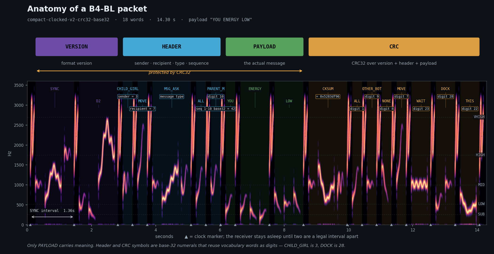

A language for the droids we grew up wishing for
What if the beeps meant something?
Remember R2 whistling at Luke, and Luke answering like he understood every word? Didn't you want to learn those sounds too?
The letdown: for all their personality, those beeps weren't a language you could study. No vocabulary tucked away in the whistles. No way to become Luke.
Real robots are getting capable fast. If droids are going to share our spaces, of course they need a way to talk to each other — and to beep and whoop at us. B4-BL is a working attempt: vocabulary, grammar, expressive sounds you can learn by ear, and a separate checked packet format when machines need certainty.
So we dubbed a few familiar droid scenes. Here’s R2 as if he really spoke B4-BL.
A little movie magic, with real words
A speculative dub of familiar Star Wars moments, with B4-BL in place of R2’s original sounds. The scenes are a playful illustration of the language.
The droid dialogue is B4-BL. The footage is from Star Wars.
Same words. Different feeling.
The same sentence — "Is your energy low?" — in four emotional registers. The words are identical; only the expressive prosody changes. These samples use the language sound demo, not the released clocked transport.
Give the droid a line
Pick a sentence shape, then fill it. The dropdowns only offer words the grammar
allows in that slot. This builder synthesizes codec.encode for
listening; its audio is not input to the released clocked decoder.
How the sounds become words
The sounds
Every phoneme is a point in a four-dimensional space — band, contour, duration, sound class. Click any one to hear it.
The vocabulary
215 morphemes. Common words get short codes; rare words get longer ones, assigned with a minimum Hamming distance of 2 so one misheard sound cannot silently become a different word.
When machines need certainty
Underneath the language is a transport: CRC32-protected packets with versioning, addressing, and sequence numbers.
YOU ENERGY LOW
with addressing and CRC32.

DOCK in the checksum is a numeral, not the concept "dock". Protocol
overhead reuses the existing sound inventory instead of inventing new noises.